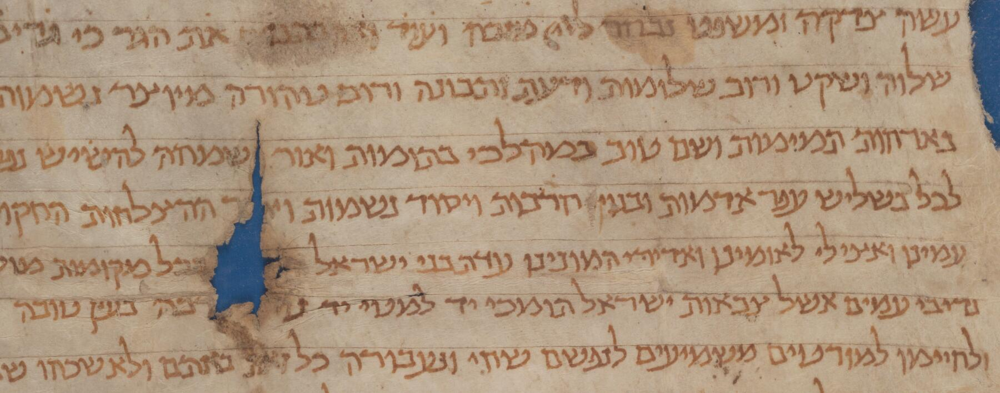
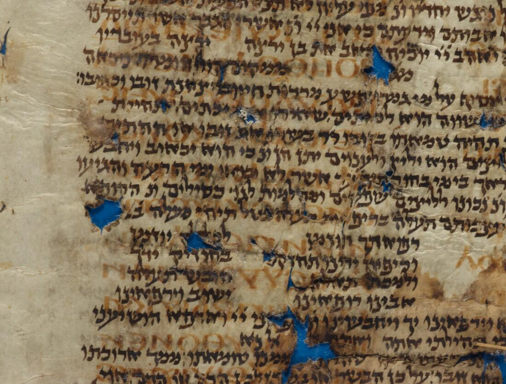
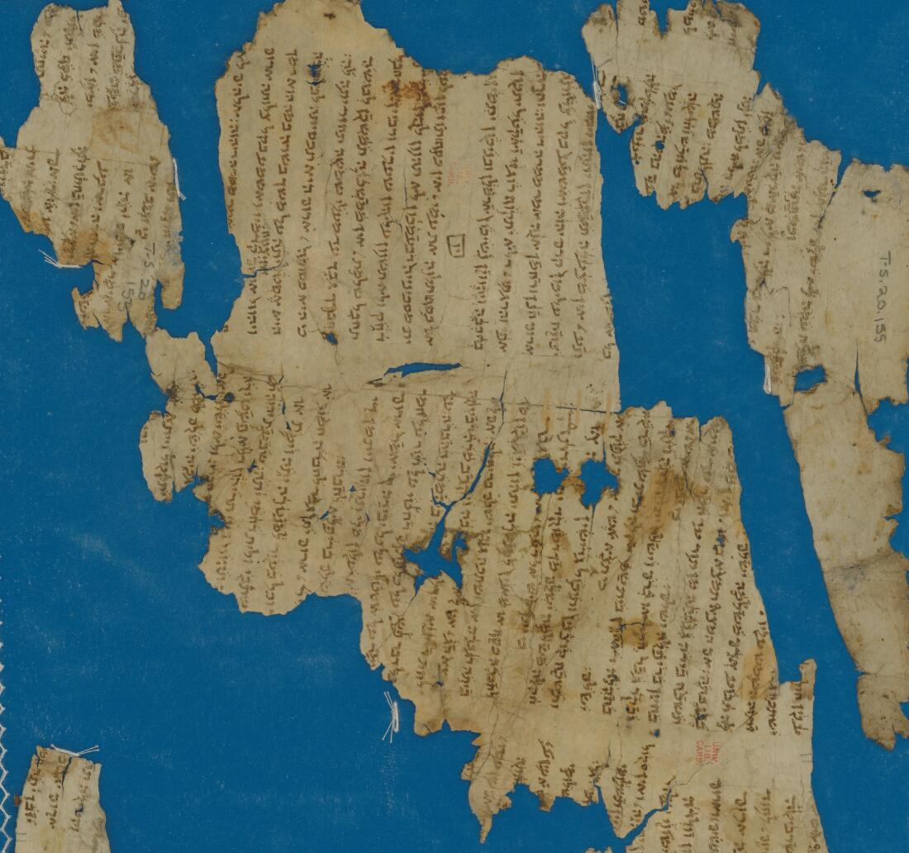

Handwritten text recognition
Transcription models for Hebrew and Judaeo-Arabic hands, training on scarce ground truth, and error analysis on damaged and palimpsested material.
An international conference on what computation is now able to read, sort and reveal in medieval Hebrew manuscripts — and on the questions it still cannot answer.

T-S 16.100 · Cambridge University LibraryAbstract deadline
To be announced
500 words maximum, bibliography included.
Full paper deadline
To be announced
For the ENTICS proceedings volume.
Conference
13–14 December 2026
Tel Aviv University, Israel.
Format
Posters & demos
Short presentations; every participant brings a poster.
אלף
Computational research on medieval Hebrew manuscripts has advanced remarkably in recent years — in handwritten text recognition, automatic layout and segmentation, computational paleography, textual analysis and more.
This work is opening digitized manuscripts to scholars who could never have consulted them in person, and making it possible to trace the development of literature and scribal tradition across time and space. The consequences reach well beyond the manuscripts themselves, into history, culturology and the study of transmission.
Wonders of Computational Manuscriptology gathers this community around the results achieved during the first half of the ERC-supported MiDRASH project, and around the challenges still ahead in its second half.
Of particular interest: evaluations of computational results by humanists, and cases in which a human expert surpasses artificial intelligence — or the reverse.

✦
Scope
Methods for textual and para-textual research developed across computer science, set against the particular difficulties of Hebrew paleography.
Transcription models for Hebrew and Judaeo-Arabic hands, training on scarce ground truth, and error analysis on damaged and palimpsested material.
Automatic detection of columns, lines, glosses, catchwords and marginalia — and what layout alone can tell us about a copy.
Script classification, scribal-hand identification, dating and localisation, and quantitative descriptions of letterforms.
Alignment, collation and stemmatics at scale; tracing recensions, citations and reuse across corpora and centuries.
Reuniting dispersed fragments, detecting joins across collections, and virtual reconstruction of codices.
Evaluations of computational output by humanists — and the revealing cases where each side outperforms the other.
From ink to text
A recognition pipeline rarely reads a page the way a person does. It first decides where the text is, then where each line runs, and only then guesses at the letters — carrying a confidence score the whole way.
An illustration, not a live model: the sequence above is scripted to show the shape of a typical pipeline. Real systems on Genizah material contend with faded ink, holes, overlapping hands and abbreviations — which is much of what this conference is about.

Format
Rather than a sequence of long talks, the two days run as poster sessions with short presentations and live demonstrations. Every participant is expected to produce a poster, so that the work stays in the room and stays discussable.
Organised within
Abstracts of up to 500 words, bibliography included. Deadlines to be announced shortly.